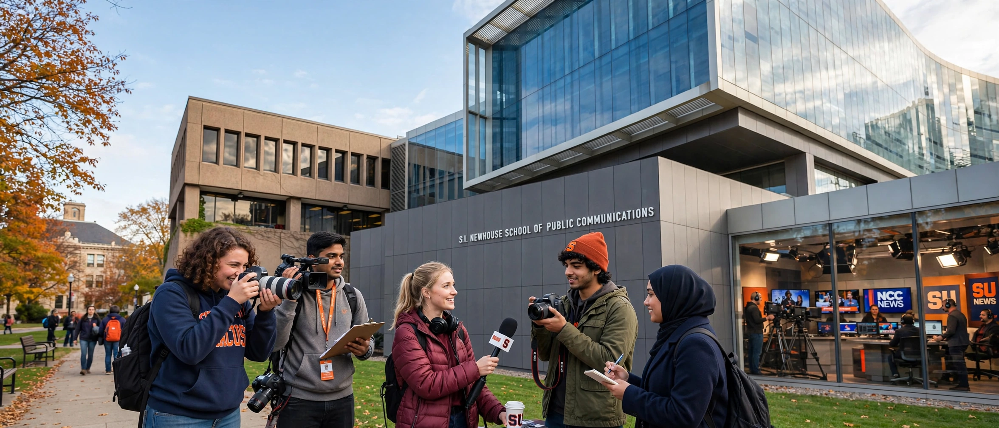

The S. I. Newhouse School of Public Communications is the communications school of Syracuse University in Syracuse, New York. It is regarded as one of the top schools of journalism and mass communication in the United States.
Syracuse's journalism programme began in 1934. In 1964 publisher Samuel Irving Newhouse Sr. gave a major gift, and the school was renamed in his honour with the opening of Newhouse 1, designed by I. M. Pei. Newhouse 2 opened in 1974 and Newhouse 3 in 2007, with a further gift from the Newhouse family and Donald Newhouse.
Undergraduate and master's degrees cover advertising, public relations, broadcast and digital journalism, newspaper and online journalism, photography, film, television, radio, media studies and communications management. Facilities include studios, the Diane and Bob Miron Digital News Center, and student media.
Notable alumni include Bob Costas, Mike Tirico, Dick Clark, Taye Diggs in related study, and many Pulitzer Prize winners and national broadcasters.